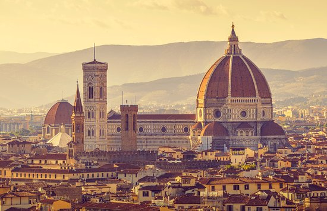
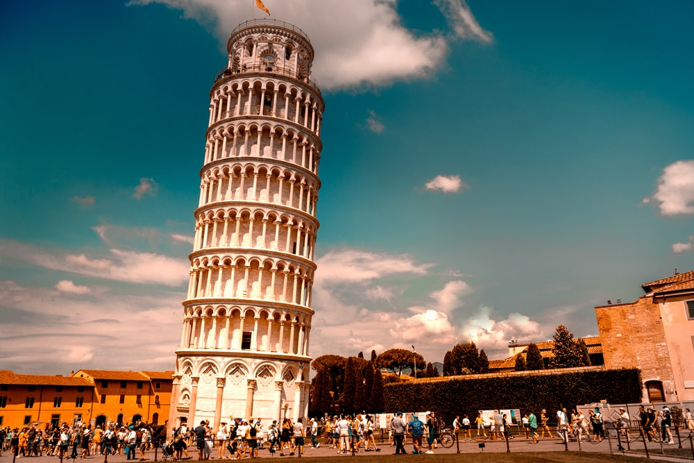
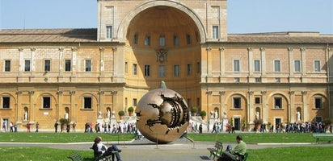
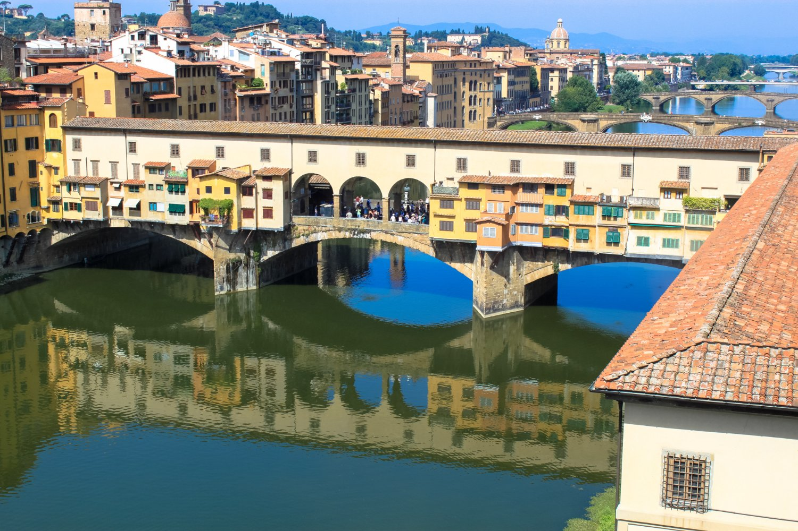

Cattedrale di Santa Maria del Fiore
is the cathedral of Florence, Italy. It was begun in 1296 in the Gothic style to a design of Arn
olfo di Cambio and was structurally completed by 1436, with the dome designed by Filippo Brunelleschi.
The exterior of the basilica is faced with polychrome marble panels in various shades of green and pink, bordered by white,
and has an elaborate 19th-century Gothic Revival fa�ade by Emilio De Fabris.

Leaning Tower of Pisa
is the campanile, or freestanding bell tower, of the cathedral of the Italian city of Pisa, known worldw
ide for its nearly four-degree lean, the result of an unstable foundation. The tower is situated behind the Pisa Cathedral and is
the third-oldest structure in the city's Cathedral Square, after the cathedral and the Pisa Baptistry.

Colosseum
is an oval amphitheatre in the centre of the city of Rome, Italy. Built of travertine limestone, tuff,
and brick-faced concrete, it was the largest amphitheatre ever built at the time and held 50,000 spectators. The Colosseum is sit
uated just east of the Roman Forum. Construction began under the emperor Vespasian in AD 72 and was completed in AD 80
under his successor and heir, Titus. Further modifications were made during the reign of Domitian (81�96).
These three emperors are known as the Flavian dynasty, and the amphitheatre was named in Latin for its association with their family name.

The Vatican Museums
are the public art and sculpture museums in the Vatican City. They display works f
rom the immense collection amassed by popes throughout the centuries including se
veral of the most renowned Roman sculptures and most important masterpieces of Renaissance art in the world.

Ponte Vecchio
is a medieval stone closed-spandrel segmental arch bridge over the Arno River, in Florence, Italy.
It is noted for its shops built along it, as was once common. Butchers initially occupied the shops; the present tenants are jewelers, art dealers, an
d souvenir sellers. The Ponte Vecchio's two neighboring bridges are the Ponte Santa Trinita and the Ponte alle Grazie.